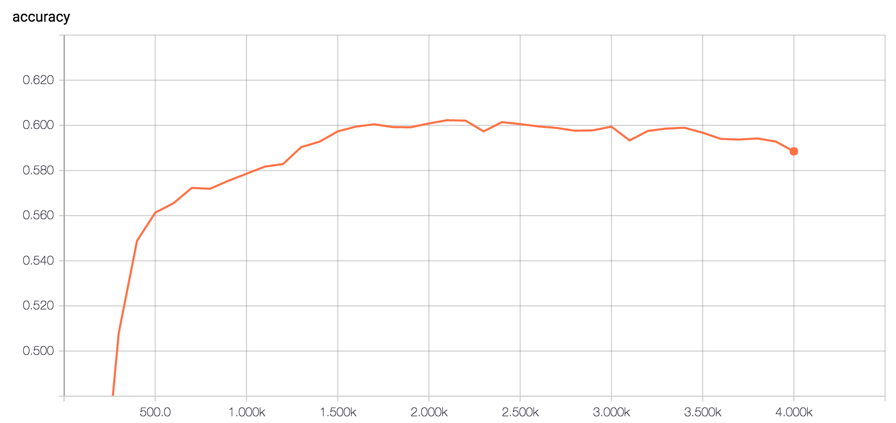
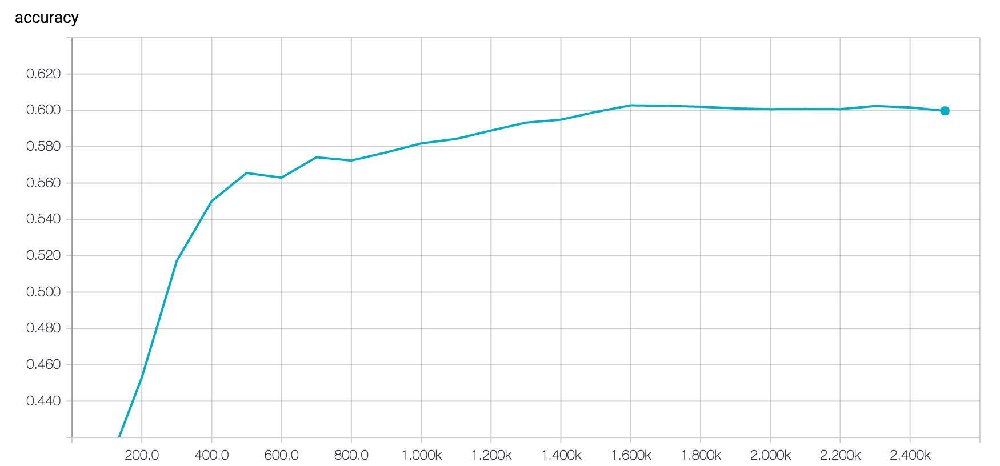
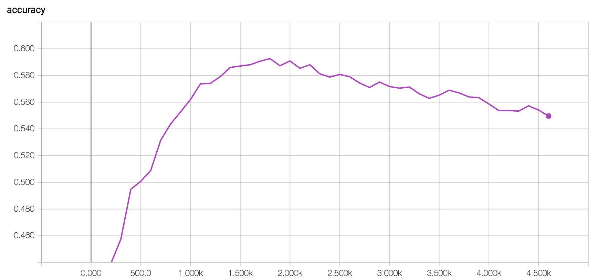
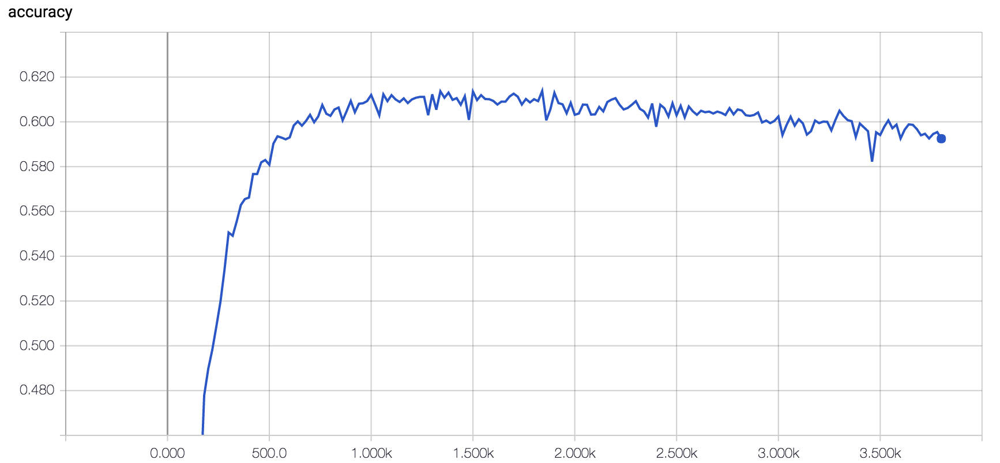

Advanced Model Attempt II
We present an advanced model that builds upon our previous advanced model.
Pre-processing
Our corpus is now at 135k tweets! Our tagging scheme remains unchanged, but we've moved on to looking into different ways of processing our data, starting with different tokenizing engines:
| Tokenizer | Token count | Vocabulary size | OOV rate (wrt. GloVe) | Validation accuracy |
|---|---|---|---|---|
| NLTK TweetTokenizer | 2207891 | 164370 | 21.55% | 0.5967 |
| GloVe script * | 2435201 | 115380 | 29.89% | -- |
* This script doesn't appear to work correctly, as provided. We suspect that this particular script isn't what was actually used to tokenize GloVe data (e.g. intended as an example). We'll work on fixing it before evaluating its output.
Attention Mechanism
We have carried out multiple experiments with attention mechanisms in our LSTM classifier. In addition, we started using Tensorboard to visualize the learning.
Recall that for our advanced attempt I, we implemented an initial attention mechanism that just scratched the surface. It worked by taking the forward LSTM final state, o_\text{fw}, and calculating a weighted average of the input word embeddings v_1, \ldots, v_T. The weight of each v_t was computed by cosine similarity and then normalized. In equations, this basic attention mechanism is:
The paper we referenced for this idea uses sigmoid instead of softmax for the weights \alpha_t because this formulation apparently "smooths" attention across multiple words in the sentence, whereas softmax has the effect of "sharpening" attention to focus on just one word.
For our second advanced model attempt, we explored additional configurations of the attention mechanism: As input to the attention mechanism, use combinations of forward and backward LSTM states, o_\text{fw} and o_\text{bw}:
-
Concatenation into a dense layer. Use the same as above, but redefine
m = activation \left( [o_\text{fw};\ o_\text{bw}] \mathbf{W_m} + b_m \right)
-
Element-wise sum.
m = o_\text{fw} + o_\text{bw}
-
Element-wise product.
m = o_\text{fw} * o_\text{bw}
-
Bilinear parameterization instead of cosine similarity.
e_t = m \mathbf{W_e} v_t
Visualizing LSTM attention
Attention performance
Attention 1
(o_\text{fw} + o_\text{bw}) \rightarrow \text{cosine similarity}
Attention 2
[o_\text{fw};\ o_\text{bw}] \rightarrow \text{dense} \rightarrow \text{cosine similarity}
Attention 3
(o_\text{fw} + o_\text{bw}) \mathbf{W} v_t \rightarrow \text{cosine similarity}
No attention
Conclusion
All of our attempted attention mechanisms were wastes of time because they failed to improve the classifier. We hypothesize that this is because this type of crude attention mechanism effectively forces the model to view the input an averaged bag-of-words. It seems to run counter to the spirit of the LSTM, which is to remember the order of the words. As far as the classifier is concerned, we're exactly where we were two weeks ago. The only improvement we've made in the classifier is the addition of more training tweets.